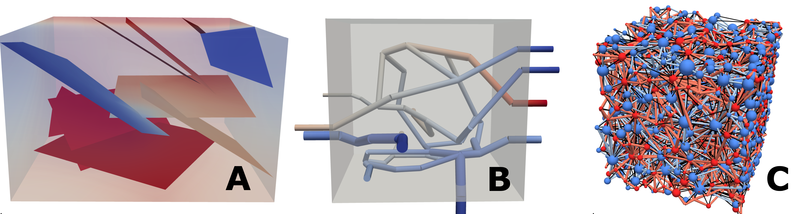

DuMux — DUNE for Multi-{Phase, Component, Scale, Physics, …} flow and transport in porous media
I am one of the main developers of the open-source simulator DuMux.
Visit the DuMux website or the official DuMux GitLab repository to learn more.
Recent ideas and concepts behind DuMux are described in our recent publication: T. Koch, D. Gläser, K. Weishaupt et al (2021) “DuMux 3 – an open-source simulator for solving flow and transport problems in porous media with a focus on model coupling”. Computers & Mathematics in Applications.
DUNE — Distributed Unified Numerics Environment

I am a core developer of DUNE, the Distributed Unified Numerics Environment. DUNE is a great modular C++ toolbox for numerics and in particular famous for its versatile grid interface.
Check out the DUNE project website or the official DUNE GitLab repositories to learn more.
dune-foamgrid

I am one of the maintainers of the DUNE grid interface implementation for surface and network grids, Dune::FoamGrid.
Visit the official GitLab repository to learn more.
The ideas, concepts, and the interface of Dune::FoamGrid are described in our publication: O. Sander, T. Koch, N. Schröder, B. Flemisch (2017) “The Dune FoamGrid implementation for surface and network grids.” Archive of Numerical Software 5 (1), 217-244
fieldcompare

fieldcompare is a Python package with command-line interface (CLI) and Python API that can be used to compare datasets for (fuzzy) equality. It helps to realize regression tests for in software testing. The focus is particularly research software that deals with numerical simulations on meshes. In regression tests, the output of a software is compared to reference data that was produced by the same software at an earlier time, in order to detect if changes to the code cause unexpected changes to the behavior of the software.
I am a contributor to the project whose main developer is Dennis Gläser (University of Stuttgart).
Visit the official GitLab repository to learn more.
The ideas, concepts, and the interface of fieldcompare are described in our publication: Gläser et al., (2023). fieldcompare: A Python package for regression testing simulation results. Journal of Open Source Software, 8(81), 4905